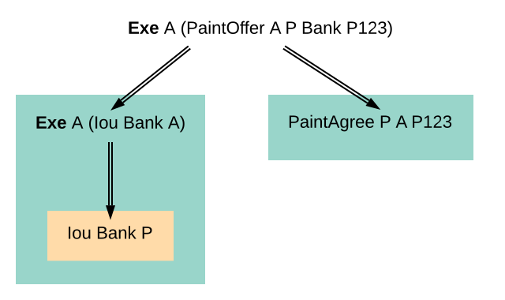
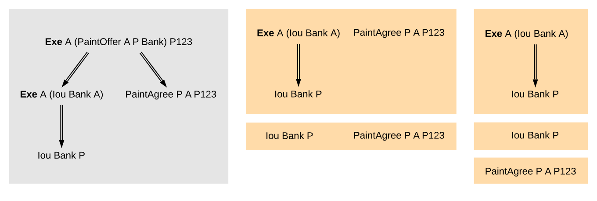
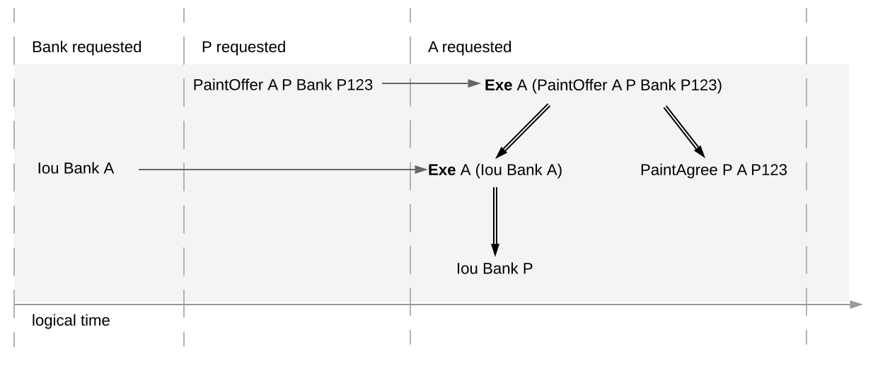

Structure¶
This section looks at the structure of a Daml ledger and the associated ledger changes. The basic building blocks of changes are actions, which get grouped into transactions.
Actions and Transactions¶
One of the main features of the Daml ledger model is a hierarchical action structure.
This structure is illustrated below on a toy example of a multi-party interaction. Alice (A) gets some digital cash, in the form of an I-Owe-You (IOU for short) from a bank, and she needs her house painted. She gets an offer from a painter (P) with reference number P123 to paint her house in exchange for this IOU. Lastly, A accepts the offer, transferring the money and signing a contract with P, whereby he is promising to paint her house.
This acceptance can be viewed as A exercising her right to accept the offer. Her acceptance has two consequences. First, A transfers her IOU, that is, exercises her right to transfer the IOU, after which a new IOU for P is created. Second, a new contract is created that requires P to paint A’s house.
Thus, the acceptance in this example is reduced to two types of actions: (1) creating contracts, and (2) exercising rights on them. These are also the two main kinds of actions in the Daml ledger model. The visual notation below records the relations between the actions during the above acceptance.
Formally, an action is one of the following:
- a Create action on a contract, which records the creation of the contract
- an Exercise action on a contract, which records that one or more parties
have exercised a right they have on the contract, and which also contains:
- An associated set of parties called actors. These are the parties who perform the action.
- An exercise kind, which is either consuming or non-consuming. Once consumed, a contract cannot be used again (for example, Alice should not be able to accept the painter’s offer twice). Contracts exercised in a non-consuming fashion can be reused.
- A list of consequences, which are themselves actions. Note that the consequences, as well as the kind and the actors, are considered a part of the exercise action itself. This nesting of actions within other actions through consequences of exercises gives rise to the hierarchical structure. The exercise action is the parent action of its consequences.
- a Fetch action on a contract, which demonstrates that the contract exists and is active at the time of fetching. The action also contains actors, the parties who fetch the contract. A Fetch behaves like a non-consuming exercise with no consequences, and can be repeated.
- a Key assertion, which records the assertion that the given contract key is not assigned to any unconsumed contract on the ledger.
An Exercise or a Fetch action on a contract is said to use the contract. Moreover, a consuming Exercise is said to consume (or archive) its contract.
The following EBNF-like grammar summarizes the structure of actions and transactions. Here, “s | t” represents the choice between s and t, “s t” represents s followed by t, and “s*” represents the repetition of s zero or more times. The terminal ‘contract’ denotes the underlying type of contracts, and the terminal ‘party’ the underlying type of parties.
Action ::= 'Create' contract
| 'Exercise' party* contract Kind Transaction
| 'Fetch' party* contract
| 'NoSuchKey' key
Transaction ::= Action*
Kind ::= 'Consuming' | 'NonConsuming'
The visual notation presented earlier captures actions precisely with conventions that:
- Exercise denotes consuming, ExerciseN non-consuming exercises, and Fetch a fetch.
- double arrows connect exercises to their consequences, if any.
- the consequences are ordered left-to-right.
- to aid intuitions, exercise actions are annotated with suggestive names like “accept” or “transfer”. Intuitively, these correspond to names of Daml choices, but they have no semantic meaning.
An alternative shorthand notation, shown below uses the abbreviations Exe and ExeN for exercises, and omits the Create labels on create actions.
To show an example of a non-consuming exercise, consider a different offer example with an easily replenishable subject. For example, if P was a car manufacturer, and A a car dealer, P could make an offer that could be accepted multiple times.
To see an example of a fetch, we can extend this example to the case where P produces exclusive cars and allows only certified dealers to sell them. Thus, when accepting the offer, A has to additionally show a valid quality certificate issued by some standards body S.
In the paint offer example, the underlying type of contracts consists of three sorts of contracts:
- PaintOffer houseOwner painter obligor refNo
- Intuitively an offer (with a reference number) by which the painter proposes to the house owner to paint her house, in exchange for a single IOU token issued by the specified obligor.
- PaintAgree painter houseOwner refNo
- Intuitively a contract whereby the painter agrees to paint the owner’s house
- Iou obligor owner
- An IOU token from an obligor to an owner (for simplicity, the token is of unit amount).
In practice, multiple IOU contracts can exist between the same obligor and owner, in which case each contract should have a unique identifier. However, in this section, each contract only appears once, allowing us to drop the notion of identifiers for simplicity reasons.
A transaction is a list of actions. Thus, the consequences of an exercise form a transaction. In the example, the consequences of Alice’s exercise form the following transaction, where actions are again ordered left-to-right.
For an action act, its proper subactions are all actions in the consequences of act, together with all of their proper subactions. Additionally, act is a (non-proper) subaction of itself.
The subaction relation is visualized below. Both the green and yellow boxes are proper subactions of Alice’s exercise on the paint offer. Additionally, the creation of Iou Bank P (yellow box) is also a proper subaction of the exercise on the Iou Bank A.
Similarly, a subtransaction of a transaction is either the transaction itself, or a proper subtransaction: a transaction obtained by removing at least one action, or replacing it by a subtransaction of its consequences. For example, given the transaction consisting of just one action, the paint offer acceptance, the image below shows all its proper non-empty subtransactions on the right (yellow boxes).
To illustrate contract keys, suppose that the contract key for a PaintOffer consists of the reference number and the painter. So Alice can refer to the PaintOffer by its key (P, P123). To make this explicit, we use the notation PaintOffer @P A &P123 for contracts, where @ and & mark the parts that belong to a key. (The difference between @ and & will be explained in the integrity section.) The ledger integrity constraints in the next section ensure that there is always at most one active PaintOffer for a given key. So if the painter retracts its PaintOffer and later Alice tries to accept it, she can then record the absence with a NoSuchKey (P, P123) key assertion.
Ledgers¶
The transaction structure records the contents of the changes, but not who requested them. This information is added by the notion of a commit: a transaction paired with the parties that requested it, called the requesters of the commit. A commit may have one or more requesters. Given a commit (p, tx) with transaction tx = act1, …, actn, every acti is called a top-level action of the commit. A ledger is a sequence of commits. A top-level action of any ledger commit is also a top-level action of the ledger.
The following EBNF grammar summarizes the structure of commits and ledgers:
Commit ::= party+ Transaction
Ledger ::= Commit*
A Daml ledger thus represents the full history of all actions taken by parties.[1] Since the ledger is a sequence (of dependent actions), it induces an order on the commits in the ledger. Visually, a ledger can be represented as a sequence growing from left to right as time progresses. Below, dashed vertical lines mark the boundaries of commits, and each commit is annotated with its requester(s). Arrows link the create and exercise actions on the same contracts. These additional arrows highlight that the ledger forms a transaction graph. For example, the aforementioned house painting scenario is visually represented as follows.
The definitions presented here are all the ingredients required to record the interaction between parties in a Daml ledger. That is, they address the first question: “what do changes and ledgers look like?”. To answer the next question, “who can request which changes”, a precise definition is needed of which ledgers are permissible, and which are not. For example, the above paint offer ledger is intuitively permissible, while all of the following ledgers are not.
Alice spending her IOU twice (“double spend”), once transferring it to B and once to P.¶
Alice changing the offer’s outcome by removing the transfer of the Iou.¶
An obligation imposed on the painter without his consent.¶
Painter stealing Alice’s IOU. Note that the ledger would be intuitively permissible if it was Alice performing the last commit.¶
Painter falsely claiming that there is no offer.¶
Painter trying to create two different paint offers with the same reference number.¶
The next section discusses the criteria that rule out the above examples as invalid ledgers.
| [1] | Calling such a complete record “ledger” is standard in the distributed ledger technology community. In accounting terminology, this record is closer to a journal than to a ledger. |